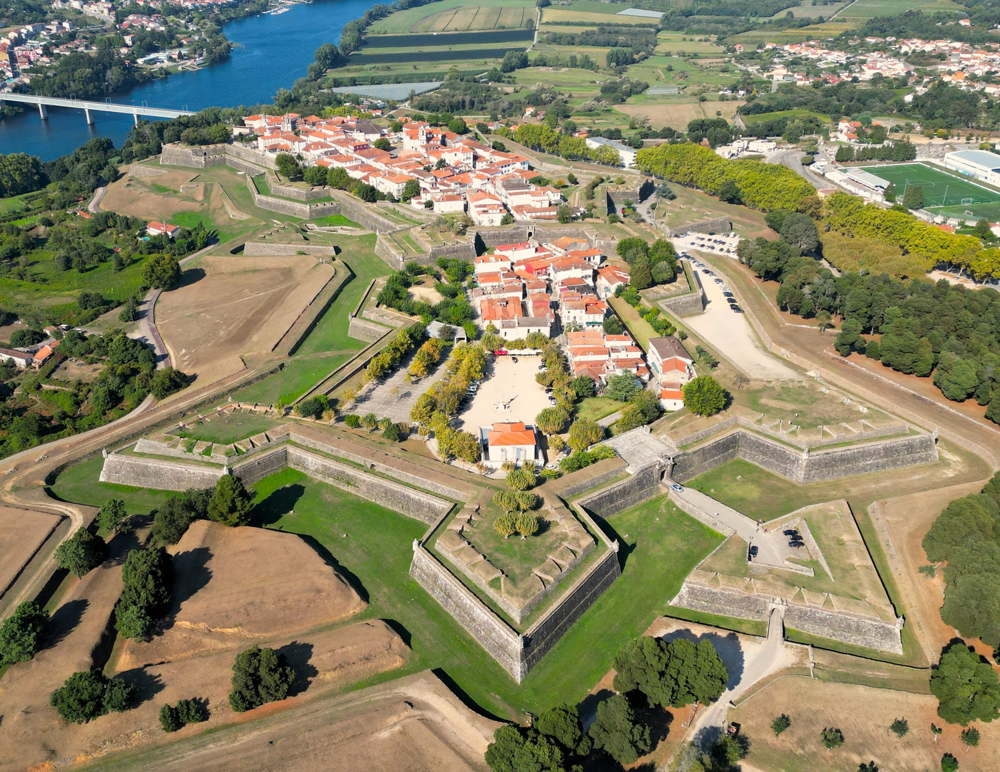

Valença
| Valença é uma cidade de Portugal. Segundo os Censos de 2021, tem uma população de 13 623 habitantes. Está situada no distrito de Viana do Castelo, na sub-região do Alto Minho, região Norte. É sede do município homónimo, com 117,13 km² de área, subdividido em onze freguesias. |
 |